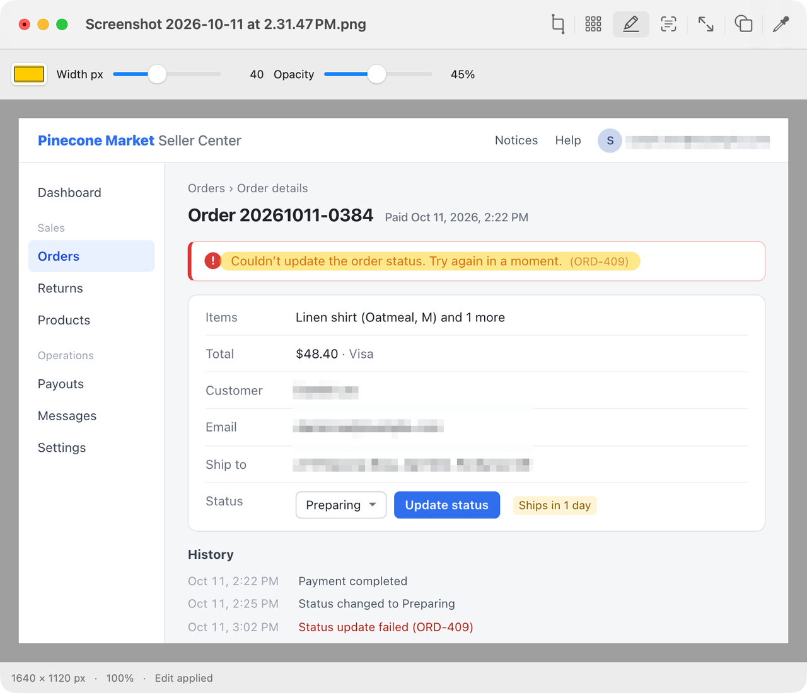

Highlight
Draw a translucent marker over anything. Pick the color, width and opacity.
Highlight the bug, hide the email, crop the noise. The one quick fix every screenshot needs before you send it.
macOS 14 or later · Apple Silicon
What’s new in 0.4.0
New candy browse: look through a folder of images as a list or as thumbnails, right in the terminal.

Draw a translucent marker over anything. Pick the color, width and opacity.
Drag over a name, an address or a face to pixelate it. Make the blocks as coarse as you need.
Apple Vision finds every line of text, Korean and Japanese included. Check the boxes, then pixelate one or all of them.
Drag a rectangle, nudge its edges, and open that part as a new image.
Scale with the proportions locked, type exact pixel dimensions, or turn the image by 90°.
Fill transparent areas with a solid color before saving to a format without alpha.
A loupe magnifies the pixels around the pointer. Click to pin one, nudge it with the arrow keys, and copy its color as hex or RGB.
The first save always creates a copy. Undo as far back as you like. Images and text recognition never leave your Mac.
Pick the format as you save. JPEG, HEIC, AVIF and JPEG 2000 take a quality setting; WebP can be lossless or lossy.
Opens PNG · JPEG · WebP · HEIC · AVIF · GIF · TIFF · BMP · PSD · SVG · RAW, and anything else macOS can decode
Saves PNG · JPEG · HEIC · WebP · AVIF (macOS 26) · TIFF · GIF · BMP · JPEG 2000 · TGA
Preview an image inline in a Kitty-compatible terminal, tmux
included. Inspect a file’s format, size and colors without opening
it. Crop, resize, rotate, mosaic and flatten with the engine the
app uses, into a new file or in place. When you’d rather see what
you’re doing, candy edit opens the app and hands the
shell straight back.
# Look
candy photo.png
candy inspect photo.heic
candy browse ~/Pictures
# Edit without leaving the shell
candy crop photo.png --rect 20,30,300,200 -o crop.png
candy resize photo.heic --width 1200 -o small.webp
candy rotate photo.jpg --cw --in-place
candy mosaic shot.png --text -o safe.png
candy flatten logo.png --background '#ffffff' -o flat.jpg
# Edit in the app; the shell stays free
candy edit photo.pngls gives you names.candy browse shows the pictures.
Run it in a folder of images and each one appears as you arrow down the list. Tab lays the folder out as thumbnails, Enter opens a subfolder or shows a picture large, and e sends it to the app for an edit. It runs in Ghostty and kitty, inside tmux too.

Homebrew installs the app and the candy command
together, or download the app from GitHub.
brew install --cask rath/tap/candyApple Silicon Macs running macOS 14 or later. Signed with a Developer ID and notarized by Apple. Native AppKit and Rust, no web view inside.
Common questions about compatibility, privacy, and how Candy handles your files.
Candy is a free, MIT-licensed native macOS image editor and CLI built with Swift/AppKit and Rust, with no web view. It fills the gap between Preview and Photoshop: Preview lacks pixelation mosaic, Apple Vision text mosaic, a full-resolution eyedropper, and a terminal image browser, while Photoshop is heavy and subscription-based for quick screenshot edits.
No. Every edit, format conversion, and Apple Vision text-region detection runs locally on your Mac with no cloud service, account, telemetry, or network request. Because mosaic is a visual effect and text detection can occasionally miss text, always review detected boxes before sharing sensitive images.
Not by default. In the app, the first Save always asks for a new file and protects the original path, including symlinks and hardlinks; subsequent saves update that copy. In the CLI, editing commands write to -o and only modify the input file when you explicitly pass --in-place.
Public releases require Apple Silicon and macOS 14 (Sonoma) or later, and are signed with a Developer ID and notarized by Apple. The interface follows macOS in English, Korean, and Japanese. Windows, Linux, and iOS are not supported; Intel Macs can build from source with Rust and Xcode.
candy browse?
Automatic inline display and candy browse work in Ghostty and kitty, both directly and inside tmux with allow-passthrough enabled. In unsupported terminals, candy <file> automatically falls back to opening the native Mac app. Piped input like cat photo.png | candy is also supported.
Candy opens everything macOS Image I/O decodes (including PNG, JPEG, WebP, HEIC, AVIF, GIF, TIFF, BMP, PSD, and full-resolution camera RAW) plus SVG and SVGZ, and exports ten raster formats with quality controls. Images are edited as 8-bit sRGB up to about 64 megapixels (512 MiB input); Candy does not have layers, animation editing, or SVG export.
What each release added or fixed. The full notes are on GitHub.
New candy browse pages through a folder of images in the terminal, with a preview beside the list or a grid of thumbnails, and walks into subfolders as it goes. Press e to edit the selected image in the app. Camera RAW files now open at full resolution.
An eyedropper magnifies the pixels under the pointer. Pin one, nudge it with the arrow keys, and copy its color as hex or RGB, read from the full-resolution image.
Text mosaic applies to the selected box or to all of them, leaving the rest to review. Cancel or Escape clears the boxes without touching the image or its undo history.
Repeated edits and undo are faster, since Candy no longer replays the whole history. Saving a copy works after the original moves, transparent previews keep clean edges, and SVG text uses system fonts.
Piped images display directly: cat image.png | candy. Previews no longer come up blank in local tmux sessions while another pane plays video or sends graphics.
A smaller download: the app executable is now stripped of its symbols, as the bundled CLI already was. Nothing else changed.
SVG and SVGZ files open everywhere a bitmap does: the editor, Finder’s Open With, drag and drop, terminal previews, candy inspect and every editing command.
Set the quality of JPEG, WebP, HEIC, AVIF and JPEG 2000 exports with a slider or --quality, and save WebP with lossy compression. Each document remembers its save settings.
Fixes the malware warning macOS showed the first time a downloaded copy opened. The app no longer carries build-machine paths that Gatekeeper could not verify.
A Japanese interface that follows your macOS language and uses macOS’s own Japanese terms for standard commands. The website gained a Japanese page.
A Korean interface. Candy opens almost any image macOS can read, saves to seven more formats including HEIC and AVIF, rotates by 90°, and edits files in place with --in-place.
Inline previews work inside tmux, the new candy inspect reports a file’s format, size and colors, and editor windows open sized to the image.
A new lollipop app icon for Finder and the Dock, with a matching mark and favicon on the website.
The first release: a native Mac app with highlight, mosaic, text mosaic, crop, resize and flatten, and the candy command for the same edits in the terminal.